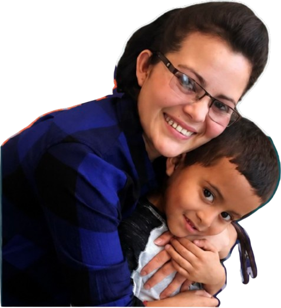

📣
Report an Impact
Share an experience confidentially to help document community-level impacts.
Get Started →
Northwest Immigrant Rights Project
We work alongside immigrant communities to document the collateral impacts of immigration enforcement and transform community experiences into maps, data, and advocacy insights.
Our Mission
This platform helps NWIRP understand how immigration enforcement affects access to work, school, healthcare, housing, and daily life across Washington State.
Learn more about the project →Share an experience confidentially to help document community-level impacts.
Get Started →Explore reported data, spatial patterns, and changing trends over time.
Explore Data →Access legal information, know-your-rights guides, and community support.
Browse Resources →